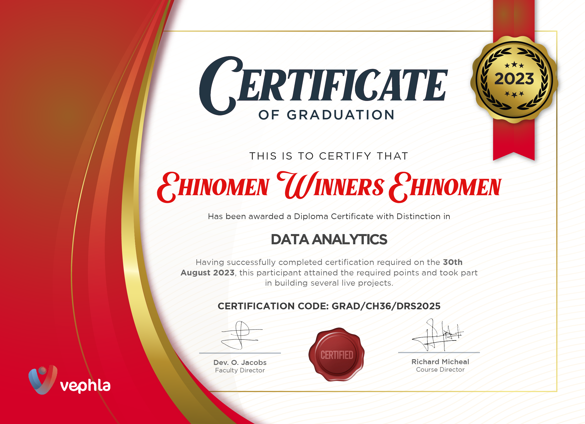

Data Analytics is indeed a career path I am grateful I delved into. From graduating top of my class from VEPHLA SOFTWARE UNIVERSITY,to seizing an exhilarating opportunity as a remote Power Bi Data Analyst Intern at SMNG ACADEMY in India.
At Vephla, I honed my Analytical skills,mastering the art of transforming real data into actionable insights.Eager for real-world challenges, I leaped at the chance to intern with SMNG Academy, immersing myself in the dynamic world of data analysis on an International sacle.
Now equiped with invalueable experience, I'm poised to tackle new frontiers as a working Data Analyst, eager to turn data into a catalyst for innovation and success.

TRANSFORMING CHAOS INTO CLARITY:Dive into my data cleaning prowess with the NASHVILLE HOUSING DATASET, where SQL was my trusty tool. Seamlessy transforming raw data into polished gem, I meticulously cleansed, Standardized and validated the dataset ensuring accuracy and reliablity.
From handling missing values to removing duplicates,each step was meticulously executed, resulting in pristine data ready for insightful analysis.

Embarked on a comprehensive data exploration journey utilizing SQL with a COVID-19 dataset. Leveraging SQL's robust querying capabilities, I deleved into the intricacies of pandemic-related data,uncovering insights to aid in understanding the spread,impact amd mitigation efforts.
Through meticulous analysis, I unearthed trends,patterns,and correlations,empowering stakeholders with actionable insights. This project showcased my proficiency in SQL and data exploration techniques,demonstrating my ability to derive meaningful insights from complex datasets amidst a global crisis.

Data Visualization with Tableau: Transforming numbers into Insights. Dive into the world of captivatiing and Interactive Dashboards and data driven story telling.
Harnessing Tableau's intuitive interface and advanced features,these vizualizations offer a seamless exploration experience,empowering stakeholders to uncover insights at a glance. Click the link to embark on a visual journey through my tableau public profile and witness the fussion of data and design in action.

Dive into a world where data becomes your canvas and Visualizations your masterpiece.With Power Bi,you will weild the power to transform raw data into captivating srories and proper infomation.
.

Spreadsheets,Formula,PivotTables,Graphs,Conditional Formatting and lots more to explore using Excel.
ANALYSIS MADE EASY!


Delve into my Customer Distribution Report project, a testament to the power of data analytics in understanding market dynamics and customer behaviour.Through meticulous DAX functions to explore and generate visualization I've uncovered valuable insights to inform strategic decision-making and enhance market reach. Fom Interactivecharts to dynamic graphs,this project showcase the effectivesness of data driven approaches in unlocking actionable insights and driving busines growth.
 Unlocking the power of data analysis in healthcare is revolutionizing the sector! From improving patient outcomes to optimizing resource allocation, data-driven insights are driving unprecedented advancements. Join the movement towards a healthier future! Empowering Emergency Rooms with data analysis is a lifesaver! By analyzing patient flow patterns, resource utilization, and treatment outcomes, ERs can operate more efficiently, reduce wait times, and ultimately save more lives.Let's revolutionize emergency care through data-driven insights!
Unlocking the power of data analysis in healthcare is revolutionizing the sector! From improving patient outcomes to optimizing resource allocation, data-driven insights are driving unprecedented advancements. Join the movement towards a healthier future! Empowering Emergency Rooms with data analysis is a lifesaver! By analyzing patient flow patterns, resource utilization, and treatment outcomes, ERs can operate more efficiently, reduce wait times, and ultimately save more lives.Let's revolutionize emergency care through data-driven insights!

I recently completed an exciting project analyzing a comprehensive Netflix Data Set spanning from 1942 to 2021. This unique data set provided valuable insights into countries, directors, genres, and release dates, allowing me to build captivating visualizations that showcased the evolution of Netflix content over the years. I delved deep into the intricate web of Netflix content evolution. By first gathering and cleaning the data set ensuring its accuracy and completeness. Then performed exploratory data analysis to understand the patterns and relationships within the dataset and finally constructing visually stunning and thought-provoking visualizations, I unveiled the hidden patterns and trends that shaped the streaming landscape over the years. Through this project, I honed my data analysis and visualization skills, demonstrating my ability to work with large data sets and present complex information in a visually appealing manner. If you're looking for a data-driven professional with a passion for Data Analytics,
I'd love to connect and explore potential opportunities.